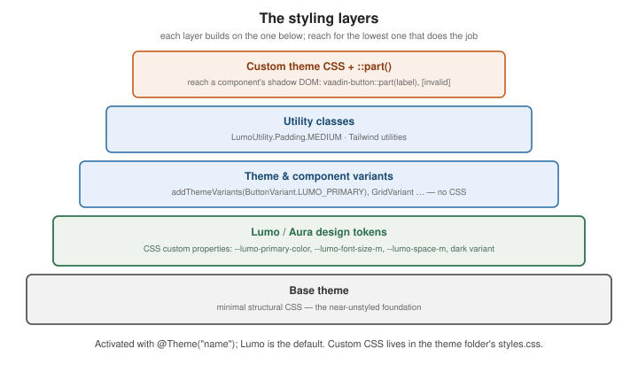

Theming and Styling
|
This content was generated with the assistance of AI and should be verified against the official documentation before being relied on in production. |
Vaadin components are styled through an application theme — a folder of CSS plus a set of design tokens — not through per-component stylesheets scattered across views. This page follows the Styling documentation. Where Vaadin 7 shipped hand-written Sass themes, the current model is CSS custom properties with a documented styling API.
The theme folder
A theme lives under src/main/frontend/themes/<name>/ with a styles.css entry point and a theme.json
manifest, activated with @Theme on the class implementing AppShellConfigurator:
@Theme("my-app")
public class AppShell implements AppShellConfigurator { }// src/main/frontend/themes/my-app/theme.json
{
"lumoImports": ["typography", "color", "spacing", "badge", "utility"],
"assets": {
"@fontsource/inter": { "*.css": "", "files/*": "fonts" }
}
}styles.css is where your rules go; @import additional files from the same folder. See
Application theme.
Base, Lumo and Aura
Every project builds on one foundation theme:
| Theme | What it is |
|---|---|
Base |
A minimal, near-unstyled foundation — structural CSS only. Start here to build a design system from scratch. |
Lumo |
The default. A complete design language exposed as CSS custom properties, with light and dark variants and a large utility-class set. |
Aura |
A newer, higher-contrast alternative to Lumo with the same token approach. |
Lumo design tokens
Lumo’s decisions are CSS custom properties you override in styles.css. They fall into groups — color,
typography, size and space, shape, elevation, interaction:
html {
--lumo-primary-color: #2f6f4f;
--lumo-primary-text-color: var(--lumo-primary-color);
--lumo-border-radius-m: 4px;
--lumo-font-family: "Inter", sans-serif;
--lumo-font-size-m: 0.9375rem;
--lumo-space-m: 0.75rem;
}The dark variant is a class on <html>; apply it globally or toggle it at runtime:
@Theme(themeClass = Lumo.class, variant = Lumo.DARK)
public class AppShell implements AppShellConfigurator { }
// or per session
UI.getCurrent().getElement().getThemeList().add(Lumo.DARK);See Lumo and its style properties.
Theme and component variants
A theme variant restyles a component through a built-in name — no CSS:
saveButton.addThemeVariants(ButtonVariant.LUMO_PRIMARY, ButtonVariant.LUMO_SUCCESS);
grid.addThemeVariants(GridVariant.LUMO_COMPACT, GridVariant.LUMO_ROW_STRIPES);
emailField.addThemeVariants(TextFieldVariant.LUMO_SMALL);Custom variants are defined in CSS with [theme~="..."] selectors and applied with
element.getThemeList().add("...").
Utility classes
LumoUtility is a set of constants for one-off spacing, layout and typography, so you rarely write a
stylesheet for small tweaks:
import com.vaadin.flow.theme.lumo.LumoUtility;
layout.addClassNames(
LumoUtility.Padding.MEDIUM,
LumoUtility.Gap.SMALL,
LumoUtility.Display.FLEX,
LumoUtility.FlexDirection.COLUMN);Tailwind can be added to the theme’s build for its full utility set; see Tailwind Reference and Utility classes. For preprocessing the theme CSS with Sass, see Sass Reference.
Custom CSS
Beyond the theme styles.css, @CssImport loads a stylesheet into the application (optionally scoped to one
component’s shadow tree with themeFor), and @StyleSheet links an external one:
@CssImport("./styles/report-view.css")
@CssImport(value = "./styles/grid-overrides.css", themeFor = "vaadin-grid")
public class ReportView extends VerticalLayout { }Styling a component’s internals
A component’s markup lives in a shadow root, so ordinary descendant selectors do not reach it. Target its
documented parts and state attributes from the theme stylesheet with ::part():
vaadin-button::part(label) { text-transform: uppercase; letter-spacing: 0.02em; }
vaadin-text-field[invalid]::part(input-field) { border-color: var(--lumo-error-color); }
vaadin-grid::part(overdue) { background: var(--lumo-error-color-10pct); } /* a part-name generator */Each component page under Components lists its parts and states. See Styling components.

Where a style comes from
When a pixel looks wrong, the question is which layer produced it. A Vaadin component is a custom element whose
internals live in a shadow root, and CSS crosses that boundary in exactly two ways: inherited properties
(including every custom property, so the Lumo tokens) flow in, and documented ::part() selectors reach out to
named elements. Everything else is blocked on purpose.
--lumo-* custom properties on html"] -->|inherited into every shadow root| shadow variant["theme variants
theme='primary small' attribute"] -->|selects built-in rules| shadow util["utility classes
on the host element in the light DOM"] -->|style the host box only| host css["your styles.css rules
on host elements and states"] --> host host["component host element
(light DOM: vaadin-button)"] --> shadow["shadow root
internal elements with part names"] part["::part(label) selectors
in styles.css"] -->|reach named parts| shadow
The rule of thumb that follows: change a token when a decision should apply everywhere (brand colour, corner
radius), a variant when one component instance should look different, a utility class for spacing and
layout around a component, and ::part() only for the few cases where nothing above reaches the element you need.
Targeting parts is the most brittle option because part names are part of the component’s public styling API, not
of your own code.
Worked example: a brand theme
The customer application gets its own look: a green brand colour, a rounded shape, a dark mode that follows the user’s choice, and one extra component rule. The theme folder holds everything:
src/main/frontend/themes/irurueta/
theme.json
styles.css
components/vaadin-grid.csstheme.json selects the Lumo parts to load (it can also declare npm assets such as fonts); @Theme on the shell
activates the folder:
{
"lumoImports": ["typography", "color", "spacing", "badge", "utility"]
}@Theme("irurueta")
public class BrandShell implements AppShellConfigurator { }styles.css overrides the tokens. Because tokens are custom properties declared on html, a single rule re-skins
every component, including ones added later:
html {
--lumo-font-family: system-ui, "Segoe UI", sans-serif;
--lumo-primary-color: hsl(152 42% 33%);
--lumo-primary-text-color: var(--lumo-primary-color);
--lumo-primary-color-50pct: hsl(152 42% 33% / 0.5);
--lumo-primary-color-10pct: hsl(152 42% 33% / 0.1);
--lumo-border-radius-m: 6px;
--lumo-border-radius-l: 10px;
}
/* a darker tint for the dark variant, because the light-mode green is too dim on a dark surface */
html[theme~="dark"] {
--lumo-primary-color: hsl(152 45% 52%);
--lumo-primary-text-color: var(--lumo-primary-color);
}Component-specific rules go in components/<tag-name>.css, which Vaadin injects into the component’s shadow root,
so they can use plain element selectors and the real part names without the ::part() syntax. Here the grid gets
overdue items tinted and header text uppercase:
/* components/vaadin-grid.css */
[part~="header-cell"] {
text-transform: uppercase;
letter-spacing: 0.04em;
font-size: var(--lumo-font-size-xs);
}
[part~="overdue"] {
background: var(--lumo-error-color-10pct);
}The overdue part is added from Java with a part name generator, so the style stays in the stylesheet and the
data-dependent decision stays in the code:
grid.setPartNameGenerator(invoice -> invoice.isOverdue() ? "overdue" : null);Finally, a dark-mode toggle. It flips the dark theme on the document element and stores the choice in the
browser, so the next visit can restore it:
public class ThemeToggle extends Button {
public ThemeToggle() {
super(VaadinIcon.ADJUST.create());
setAriaLabel("Toggle dark mode");
addClickListener(e -> {
UI ui = UI.getCurrent();
ThemeList themes = ui.getElement().getThemeList();
boolean dark = themes.contains(Lumo.DARK);
if (dark) { themes.remove(Lumo.DARK); } else { themes.add(Lumo.DARK); }
ui.getPage().executeJs("localStorage.setItem('theme', $0)", dark ? Lumo.LIGHT : Lumo.DARK);
});
}
}On the next visit, read localStorage in an @JsModule or a <script> in the theme and apply the saved value before
first paint, to avoid a flash of the wrong theme. Status labels use the built-in badge variants rather than custom
CSS:
Span status = new Span("Active");
status.getElement().getThemeList().add("badge success");Theming in Vaadin 25
Vaadin 25 changes how a foundation theme is loaded. Instead of the @Theme folder as the entry point, the
application shell lists the stylesheets it wants, and the colour scheme becomes an annotation. The tokens, variants
and ::part() rules described above are unchanged:
@StyleSheet(Lumo.STYLESHEET) // or Aura.STYLESHEET for the Aura theme
@StyleSheet(Lumo.UTILITY_STYLESHEET) // the LumoUtility classes
@StyleSheet("styles.css") // your own overrides (a static resource)
@ColorScheme(ColorScheme.Value.LIGHT_DARK) // follow the operating system's light/dark preference
public class BrandShell implements AppShellConfigurator { }ColorScheme.Value includes LIGHT, DARK and LIGHT_DARK, which follows the operating system’s preference with
light as the fallback. A project that targets Vaadin 24 LTS keeps the @Theme form; check the upgrade notes before
moving across the boundary.
Debugging styles
-
Inspect the host, then the shadow root. In the browser’s developer tools expand the component’s
#shadow-rootand look at thepartattributes: those are the names::part()accepts. -
Check the token first. If a colour will not change, find which
--lumo-*property the rule reads and override that property onhtmlinstead of fighting the rule. -
Specificity. Rules injected into a component’s shadow root and rules from
styles.cssdo not compete — they apply to different trees. If a::part()rule loses, check the state attribute ([invalid],[focused]) and the part name for typos. -
Cache. After editing theme CSS in development mode the dev server reloads it; in a production build the bundle is hashed, so a stale style after a deployment points at a proxy or CDN cache.
See also
-
Responsive Design and PWA — breakpoint utilities and responsive layouts.
-
UI Component Libraries — the styling section in brief, plus add-ons.
-
Tailwind Reference and Sass Reference — utility CSS and preprocessing.
-
Light and Dark Theming with CSS — light/dark theming at the CSS-platform level.